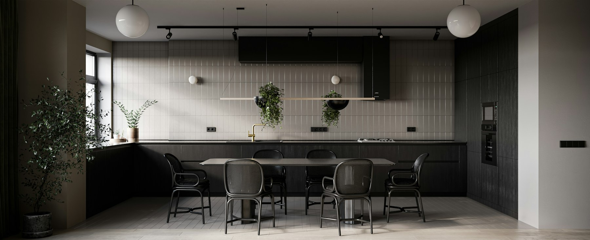
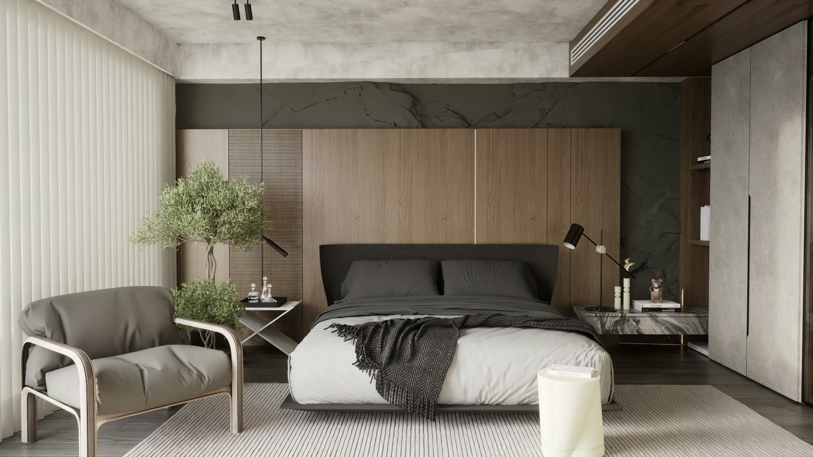

Featured · StylingHow to style a coffee table like a stylist
Practical advice and ideas from the Hausly team on how to style a coffee table like a stylist.
Read article →

MakersMeet the ceramicist behind our stoneware vases
Practical advice and ideas from the Hausly team on meet the ceramicist behind our stoneware vases.

GuidesChoosing the right vase for every bouquet
Practical advice and ideas from the Hausly team on choosing the right vase for every bouquet.

StylingLayering textures for a cosy living room
Practical advice and ideas from the Hausly team on layering textures for a cosy living room.

SeasonalFive easy ways to refresh your home for autumn
Practical advice and ideas from the Hausly team on five easy ways to refresh your home for autumn.

CareCaring for linen, rattan and natural wood
Practical advice and ideas from the Hausly team on caring for linen, rattan and natural wood.
No articles found
Newsletter
Stay in the loop
Join for early access to new drops, members-only offers and 10% off your first order.